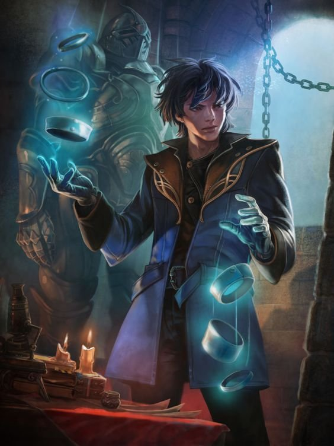
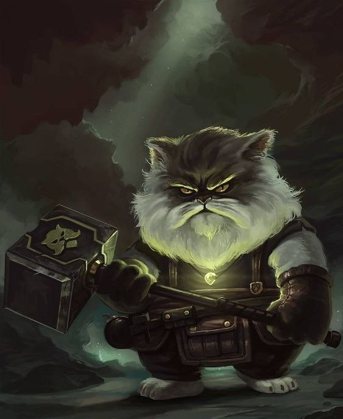
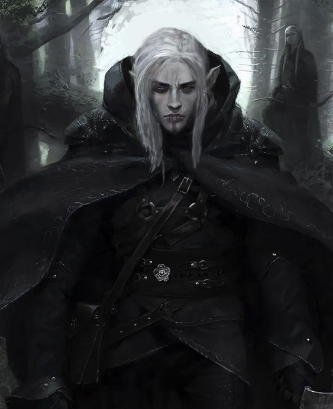

| Outras caracteristicas | ||
|---|---|---|
| Habilidades | Personalidade | Armas |
| Meio-Elfo | Anão | Elfo |
| Centro comercial Moctezuma | Francisco Chang | Mexico |
- 
Meio-Elfo
"Andar entre dois mundos, mas verdadeiramente pertencer a nenhum deles, meio-elfos combinam as melhores qualidades de seus pais elfos e humanos. Alguns meio-elfos vivem entre os humanos, separados por suas diferenças emocionais e físicas, assistindo amigos e entes falecendo, enquanto o tempo quase não os toca."
-

Anão
"Audazes e resistentes, os anões são conhecidos como hábeis guerreiros, mineradores e trabalhadores em pedra e metal. Embora tenham menos de 1,50 metro de altura, os anões são tão largos e compactos que podem pesar tanto quanto um humano 60 centímetros mais alto. Sua coragem e resistência compete facilmente com qualquer povo mais alto. "
-

Elfo
"Com a sua graça sobrenatural e seus traços finos, os elfos parecem assustadoramente belos para os humanos e os membros de muitas outras raças. Em média, eles são ligeiramente mais baixos do que os humanos, variando de pouco menos de 1,50 metro até pouco mais de 1,80 metro de altura."